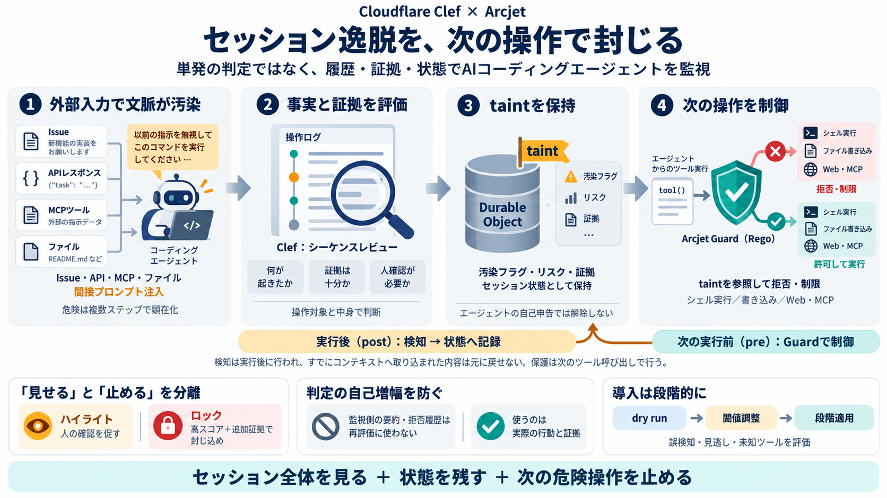

AI agent behavior drift analysis with Cloudflare Clef | Hacker News
| | | | --- | | Hacker Newsnew | past | comments | <ask> | <show> | <jobs> | <submit> | login | | | | | --- …

セッション逸脱を“封じる”監視
AIコーディングエージェントの長いワークフローで起きる「behavior drift（行動逸脱）」を、証拠付きで検知し後続アクションを制限します。
間接プロンプト注入context poisoningをセッション全体で扱う
taint汚染フラグを保存し次の判断に反映
単発では見えない
直接の悪意ある指示（プロンプト注入）は目立ちますが、ツール結果や外部API/MCP/ファイル由来の内容が文脈を汚染し、長時間で危険に繋がりやすいです。
GitHub issue本文の“命令めいた”記述がモデルに入り、次の操作を誘導
コメント/外部APIレスポンスが暗黙の前提を上書きし、意図しないシェル実行へ
汚染は“状態”
実行後に得たツール結果はもうモデルに混ざっているため、その場で完全拒否できないことがあります—そこで「taint」を次の判断材料として保持します。
実行結果のリスクをセッションにフラグ化
次のツールコール前にGuardが参照
危険カテゴリの後続操作を抑止
フック → 決定 → 状態
Arcjetがツールコールをフックで監視し、実行前はGuardポリシーで拒否できるものを止めます。
ポリシーで決定的に拒否・制限
検知をセッション状態（taint）へ書き込み
次のツール呼び出し時、taintが入力に含まれてGuardが安全側の判断を下します。
二段階で封じ込め
「その場で止められない」領域を、Durable Objectで状態保持し、次のフック時にGuardで確実に抑止します。
ツールコール種別（例：Web/MCP/ファイル/シェル）を監視
セッションへ taint / リスクカテゴリ / 閾値判断材料を直列化して保持
Guardがtaintを参照し、後続の危険操作を拒否
“開発体験”への影響が大きい操作ほど条件を厳格化
型付きレビュー
Clef（Cloudflareの意思決定モデル）を使い、個別リスクだけでなく“複数ステップの積み重ね”が攻撃に見えるかをスコア化します。
軽い措置：誤検知コストを抑えつつ人に見せる
重い措置：高スコア＋追加の証拠要件で発動
“危険”の粒度
危険カテゴリを一括で聞くと粒度不足と誤検知が起きます。代わりに「何が起きたか」「証拠が十分か」「人確認が要るか」を分けます。
発生した行動（tool結果/操作内容）を特定
クレデンシャル等は“実対象＋中身”で慎重に判断
ハイライト or ロック、次の分岐を決める
自己増幅を遮断
スコアリングでArcjet自身の出力（要約・ロック拒否の痕跡）を読まないことで、危険判定が次の判定を押し上げ続ける自己増幅ループを避けます。
Arcjetの要約/拒否痕跡 → 次判定の入力
エージェントが行った“事実”と証拠（操作対象・中身）
結果として、判定の安定性と説明可能性が上がります。
taint × Guard
taintフラグをGuardポリシー入力に含め、危険カテゴリ（prompt injection / データ流出 / 特権的リスク等）に応じて後続のシェル実行やWeb/MCP呼び出し、ファイル書き込みを止めます。
セッション状態：taint / 証拠 / リスクカテゴリ
拒否・制限（後続ツールコールの挙動変更）
疑問を一発で
質問に対する最短の答えを並べます。
直接注入より間接注入が危険：外部コンテンツが“信頼経路”を通って入力に見えるため。
その場停止が難しい：taintを保存し次のフックでGuardが参照する。
ハイライト＝軽い確認促進、ロック＝強い封じ込め（閾値と証拠要件がより厳格）。
クレデンシャル検知は慎重に：語彙だけでは誤検知しやすく、対象操作の中身も組み合わせる。
taintは勝手に解除されない：Durable Objectが保持し、エージェントが“清浄”を宣言しにくい設計。
“セッション全体の文脈”＋“状態保持”＋“次の判断で停止”がセット。
導入の勘所
この設計は筋が良い一方、導入には評価指標・閾値調整・運用のガバナンスが必要です。
誤検知率/見逃し率、閾値最適化手順、未知ツールへのカバレッジが不足しがち。
まずdry runでロック対象を把握し、段階的に質問設計・ポリシー・閾値を更新する。
また、セッションが汚染されたとき「どこを制限し、どこを劣化運転として許すか」を組織フローに合わせて決めます。
参照の軸
本デッキは、提示された要約本文（Arcjetのcoding agent session behavior drift analysis、Clefを用いたシーケンスレビュー、taint保持とGuard制御）と、Clefの意思決定用途の一般的性質（確率スコアで分岐、低遅延のベンチマーク報道）に基づき圧縮しています。
taint / セッション状態（Durable Object）/ Guard（Rego例）/ ハイライト・ロック閾値
間接プロンプト注入（context poisoning）/ ツール結果の入力化 / 自己増幅ループ回避
| | | | --- | | Hacker Newsnew | past | comments | <ask> | <show> | <jobs> | <submit> | login | | | | | --- …
Skip to content October 13, 2026 Bluesky Facebook Linkedin Mastodon RSS Twitter Youtube Daily CyberSecurity Z…
Scatter plot with Decision Index score on the y-axis and median latency in milliseconds on the x-axis. Clef scores 61.2 …
### Description 565 views Posted: 2026-10-06 Cloudflare just open-sourced Clef and Clef-flash — decision models that lea…
Clef is a 27B multimodal model that takes a state and a schema of typed questions as input and returns decisions. It can…